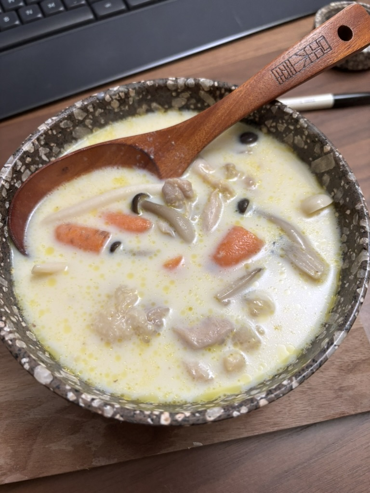

豆乳雞湯

材料
- 雞湯 400ml
- 無糖豆漿 600ml
- 去皮雞髀肉 1件
- 紅蘿蔔 大半條
- 硬豆腐 半盒
- 本菇 半包
- 鹽 適量
- 胡椒粉 適量
步驟
- 先將雞肉切片，用鹽和胡椒粉醃大約15分鐘
- 清雞湯煮滾後放入雞髀肉，煮約5分鐘。之後加菜煮沸
- 最後加入無糖豆漿和豆腐。煮多約5分鐘。可再加鹽和胡椒粉調味
起司奶蓋
材料
- Cream Cheese 100g
- 牛奶 83g
- 煉奶 15g
- 鹽 ¼至½茶匙
- Heavy Cream 100g
步驟
- Cream cheese分次加奶攪勻
- 加煉奶
- 加鹽
- 無水無油容器加heavy cream打至挺身